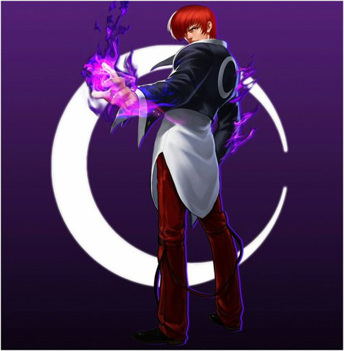
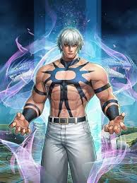
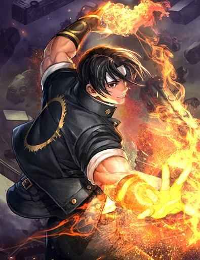
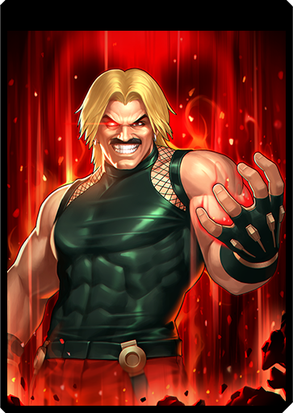
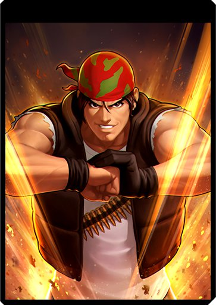
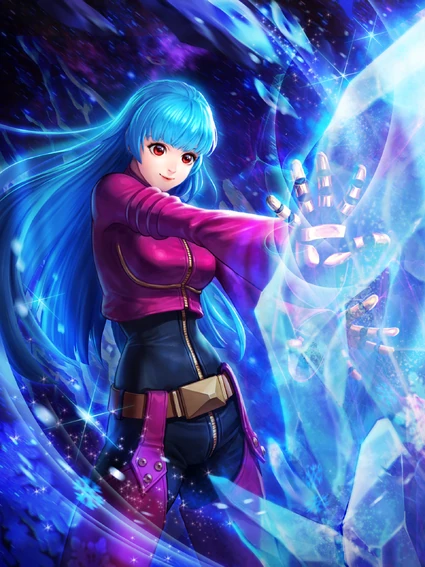

-
Iori Yagami
Iori Yagami é um dos personagens mais icônicos da série de jogos de luta The King of Fighters (KOF), desenvolvida pela SNK. Ele foi introduzido na série em The King of Fighters '95 como rival de Kyo Kusanagi, o protagonista da série.
Ataque Principal: Ya Otome -
Orochi
Uma entidade divina e maligna que serve como o principal antagonista da Saga Orochi. Orochi é um deus ancestral que busca "restaurar o equilíbrio natural" destruindo a humanidade.
Ataque Principal: Kaijo/Harae -
K' (K-Dash)

Protagonista da Saga NESTS, K' é um lutador modificado geneticamente, capaz de manipular as chamas de Kyo Kusanagi. Um dos personagens centrais e incrivelmente habilidosos.
Ataque Principal: One Inch -
Kyo Kusanagi
Protagonista de longa data da série, Kyo é o herdeiro do clã Kusanagi, destinado a lutar contra Orochi.Sua conexão com a saga Orochi o torna um dos personagens mais importantes e fortes.
Ataque Principal: Pirocinese -
Rugal Bernstein
Um dos chefes mais famosos da franquia, conhecido por sua força esmagadora. Combinou seu próprio poder com a energia Orochi, tornando-se Omega Rugal. Ataques extremamente rápidos e devastadores
Ataque Principal: Genocide Cutter -
Ralf
Ralf é uma pessoa de sangue quente que só cuida de ação. Ele também é informal, ao falar com seus parceiros, ou o seu comandante Heidern embora ele tende a começar a falar de uma maneira mais formal.
Ataque Principal: Vulcan Punch -
Kula Diamond
Kula Diamond é uma garotinha de origem desconhecida. Ela foi sequestrada pela NESTS ainda jovem e fazia parte do programa Anti-K'; um experimento que altera o DNA do usuário para permitir que ele controle o gelo. Como efeito colateral de sua cirurgia, seu estado mental voltou ao de uma criança.
Ataque Principal: Freeze Execution